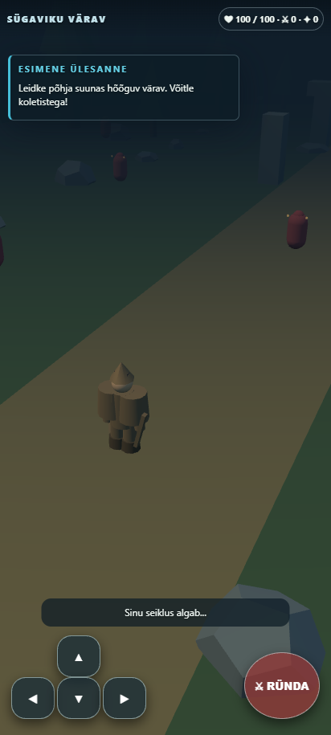
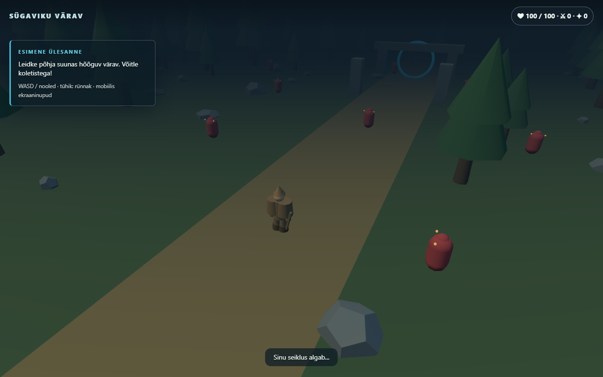

Viietunnine mänguarendus (2. november 2026, 07:36–12:36 Eesti aja järgi). Kohalik arvuti salvestab pilte iga 30 minuti järel. Avalikud pildid võivad uueneda hiljem.
Mängi mänguViimane telefonipiltViimane arvutipilt

Kontrollin viimast arenguseisu…
Kohalik AI töötab reasoning ON režiimis. Enne avaldamist kontrollitakse teste ja brauserit. Pildid uuenevad kontrollitud üleslaadimisel.